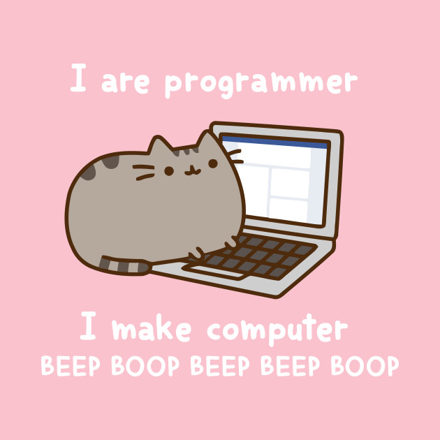

Hello! My name is Kat. I'm a junior Computer Science Major at Berea College. I am from Somerset KY and plan on moving to Washington someday.
!!EMILY:This assignment honestly led to an epiphany so I can't thank you enough. I honestly am considering being a web designer now. Before I was scared of CSC and had no connection with it but I just understand so much after this!!
Anyway, sorry: Some of my favorite things in life are listed below: 